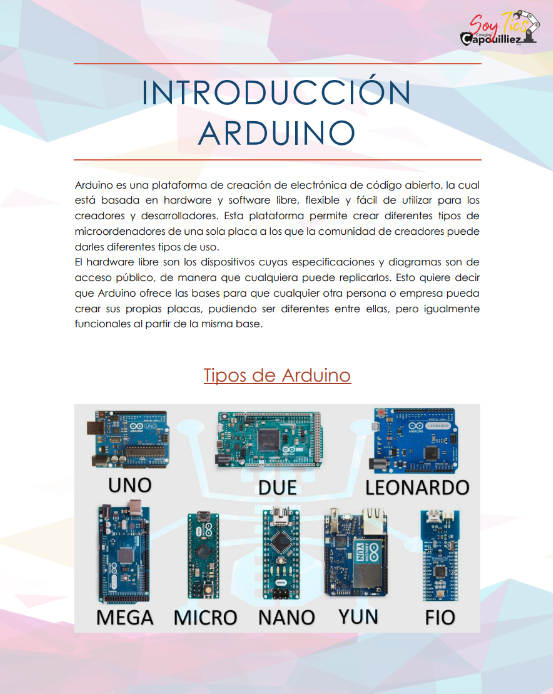
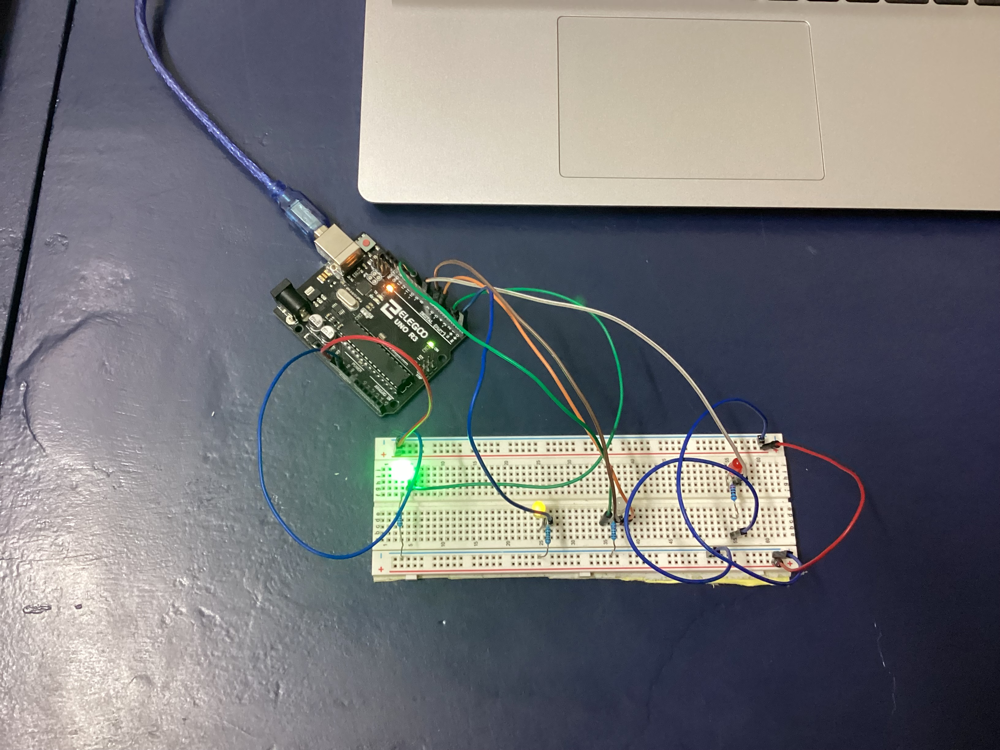

Contenido pagina WEB

Entrada 1: Introduccion
Esta semana aprendimo sobre arduinos

Entrada 3: Armando circuitos
Esta semana armamos nuestro primer circuito arduino físico
Entrada 2: Circuito Arduino
En esta sesion aprendimos a usar elementos de arduino. Aparte de esto, completamos nuestro primer circuito.